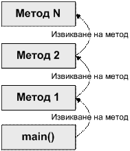
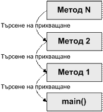
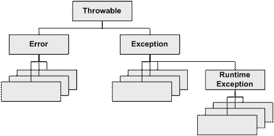
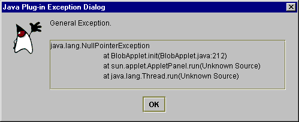
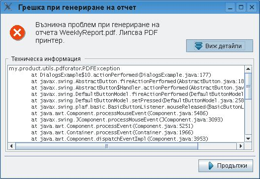

Настоящият текст е част от книгата на Светлин Наков и колектив:
Въведение в програмирането с Java
Можете да изтеглите цялата книга безплатно от www.introprogramming.info.
Настоящият текст е част от книгата на Светлин Наков и колектив:
Можете да изтеглите цялата книга безплатно от www.introprogramming.info.
Лъчезар Цеков
Михаил Стойнов
Светлин Наков
В настоящата тема ще се запознаем с изключенията в Java и обектно-ориентираното програмиране. Ще се научим как да ги прихващаме чрез конструкцията try-catch, как да ги предаваме на предходните методи чрез throws и как да хвърляме собствени или прихванати изключения. Ще дадем редица примери за използването им.
Ще разгледаме типовете изключения и йерархията, която образуват. Накрая ще се запознаем с предимствата при използването на изключения и с това как най-правилно да ги прилагаме в конкретни ситуации.
Докато програмираме ние описваме постъпково какво трябва да направи компютъра и в повечето случаи разчитаме на нормалното изпълнение на програмата. В повече от 99% от времето програмите следват този нормален ход на изпълнение, но съществуват и изключения от това правило. Да речем, че искаме да прочетем файл и да покажем съдържанието му на екрана. Името на файла се подава от потребителя. По невнимание потребителя въвежда име на файл, който не съществува. Програмата няма да може да се изпълни нормално и да покаже съдържанието на файла на екрана. В този случай имаме изключение от правилното изпълнение на програмата и за него трябва да се сигнализира на потребителя и/или администратора.
Изключение (exception) в общия случай е уведомление за дадено събитие, нарушаващо нормалната работа на една програма. Изключенията дават възможност това необичайно събитие да бъде обработено и програмата да реагира по някакъв начин. Когато възникне изключение конкретното състояние на програмата се запазва и се търси обработчик на изключението (exception handler).
Изключенията се предизвикват или "хвърлят" (throw an exception).
Exception handling (инфраструктура за обработка на изключенията) е част от средата – механизъм, който позволява хвърлянето и прихващането на изключения. Част от тази инфраструктура са дефинираните езиковите конструкции за хвърляне и прихващане на изключения. Тя се грижи и затова изключението да стигне до кода, който може да го обработи.
В обектно-ориентираното програмиране (ООП) изключенията представляват мощно средство за централизирана обработка на грешки и изключителни (необичайни) ситуации. Те заместват в голяма степен процедурно-ориентирания подход, при който всяка функция връща като резултат от изпълнението си код на грешка (или неутрална стойност, ако не е настъпила грешка).
В ООП кодът, който извършва дадена операция, обикновено предизвиква изключение, когато в него възникне проблем и операцията не може да бъде изпълнена успешно. Методът, който извиква операцията може да прихване изключението и да обработи грешката или да пропусне изключението и да остави то да бъде прихванато от извикващият го метод. Така не е задължително грешките да бъдат обработвани непосредствено от извикващия код, а могат да се оставят за тези, които са го извикали. Това дава възможност управлението на грешките и необичайните ситуации да се извършва на много нива.
Друга основна концепция при изключенията е тяхната йерархична същност. Изключенията в ООП са класове и като такива могат да образуват йерархии посредством наследяване. При прихващането на изключения може да се обработват наведнъж цял клас от грешки, а не само дадена определена грешка (както е в процедурното програмиране).
В ООП се препоръчва чрез изключения да се управлява всяко състояние на грешка или неочаквано поведение, възникнало по време на изпълнението на една програма.
Кое е очаквано и кое неочаквано събитие е описано към края на тази глава.
Изключение (exception) в Java представлява събитие, което уведомява програмиста, че е възникнало обстоятелство (грешка) непредвидено в нормалния ход на програмата. Това става като методът, в който е възникнала грешката изхвърля специален обект съдържащ информация за вида на грешката, мястото в програмата, където е възникнала, и състоянието на програмата в момента на възникване на грешката.
Всяко изключение в Java носи т.нар stack trace (няма да се мъчим да го превеждаме) – информация за това къде точно в кода е възникнала грешката. Ще го дискутираме подробно малко по-късно.
Типичен пример за код, който хвърля изключения е следният метод:
|
public static void readFile(String fileName) { FileInputStream fis = new FileInputStream(fileName); BufferedReader in = new BufferedReader( new InputStreamReader(fis)); String tmp = null; while ((tmp = in.readLine()) != null) { System.out.println(tmp); } in.close(); fis.close(); } |
Това е код, който се опитва да отвори текстов файл и да чете от него ред по ред докато файлът свърши. Повече за работата с файлове ще научите в главата "Текстови файлове". За момента, нека се съсредоточим не в класовете и методите за работа с файлове, в конструкциите за работа с изключения.
Подчертаните методи и конструктори са тези, в които се хвърлят изключенията. В примера конструкторът FileInputStream(fileName) хвърля FileNotFoundException, ако не съществува файл с име, каквото му се подава. Методите на потоците readLine() и close(), хвърлят IOException ако възникне неочакван проблем при входно-изходните операции. Този пример няма да се компилира (местата, където са грешките от компилация, са подчертани), защото хвърляните изключения трябва да бъдат прихванати и да бъдат подходящо обработени.
Ако по време на нормалния ход на програмата някой от извикваните методи неочаквано хвърли изключение, то нормалният ход на програмата се преустановява. Това ще се случи, ако например възникне изключение от типа FileNotFoundException при инициализиране на файловия поток от горния пример. Нека разгледаме сления ред:
|
FileInputStream fis = new FileInputStream(fileName); |
Ако се случи изключение, променливата fis няма да бъде инициализирана и ще остане със стойност null. Нито един от следващите редове от метода няма да бъде изпълнен. Програмата ще преустанови своя ход докато виртуалната машина не намери обработчик на възникналото изключение FileNotFoundException.
След като един метод хвърли изключение, виртуалната машина търси код, който да го прихване и евентуално обработи. За да разберем как действа този механизъм ще разгледаме понятието стек на извикване на методите. Това е същият този стек, в който се записват всички променливи в програмата, параметрите на методите и стойностните типове.
Всяка програма на Java започва с main() метод. В него може да се извика друг метод да го наречем "Метод 1", който от своя страна извиква "Метод 2" и т.н., докато се извика "Метод N".
Когато "Метод N" свърши работата си управлението на програмата се връща на предходния и т. н., докато се стигне до main() метода. След като се излезе от него свършва и програмата. Като се извиква нов метод той се добавя най-отгоре в стека, а като свърши изпълнението му метода се изважда от стека.
Можем да визуализираме този процес на извикване на методите един от друг по следния начин:

Процесът на търсене и прихващане на изключение е обратният на този за извикване на методи. Започва се от метода, в който е възникнало изключението и се върви в обратна посока докато се намери метод, където изключението е прихванато:

Не всички изключения трябва да се прихващат, но затова ще стане дума след малко в частта за видовете изключения.
За да прихванем изключение обгръщаме парчето код, където може да възникне изключение с програмната конструкция try-catch:
|
try { Some sode that may throw and exception } catch (ExceptionType objectName) { // Code handling an Exception } catch (ExceptionType objectName) { // Code handling an Exception } |
Конструкцията се състои от един try блок, обгръщащ валидни Java конструкции, които могат да хвърлят изключения, следван от един или много catch блока, които обработват различни по тип изключения. В catch блокът ExceptionType трябва да е тип на клас, който е наследник на класа java.lang.Throwable. В противен случай ще получим проблем при компилация. Изразът в скобите след catch играе роля на декларация на променлива и затова вътре в блока catch можем да използваме objectName, за да извикваме методите или да използваме свойствата на изключението.
Да направим така, че горният пример да се компилира. Заграждаме целият проблемен код, където могат да се хвърлят изключения с try-catch блок и добавяме прихващане на двата вида изключения:
|
public static void readFile(String fileName) { try { // Exceptions could be thrown below FileInputStream fis = new FileInputStream(fileName); BufferedReader in = new BufferedReader( new InputStreamReader(fis)); String tmp = null; while ((tmp = in.readLine()) != null) { System.out.println(tmp); } in.close(); fis.close(); } catch (FileNotFoundException e) { // Exception handler for FileNotFoundException // We just inform the client that there is no such file System.out.println("The file \"" + fileName + "\" does not exist! Unable to read it."); } catch (IOException e) { // Exception handler for IOException e.printStackTrace(); } } |
Добре, сега методът се компилира, но работи по малко по-различен начин. При възникване на FileNotFoundException по време на изпълнението на new FileInputStream(fileName) виртуалната машина няма да изпълни следващите редове, а ще се прескочи чак на реда, където изключението е прихванато с catch (FileNotFoundException e) и ще се изпълни блока след него:
|
catch (FileNotFoundException e) { // Exception handler for FileNotFoundException // We just inform the client that there is no such file System.out.println("The file \"" + fileName + "\" does not exist! Unable to read it."); } |
Като обработка на изключението просто потребителите ще бъдат информирани, че такъв файл не съществува. Това се извършва чрез съобщение, изведено на стандартния изход.
Аналогично, ако възникне изключение от тип IOException по време на изпълнението на метода in.readLine(), то се обработва от блока:
|
catch (IOException e) { // Exception handler for IOException e.printStackTrace(); } |
Понеже не знаем естеството на грешката, породила грешно четене, отпечатваме цялата информация за изключението на стандартния изход.
Редовете код между мястото на възникване на изключението и мястото на прихващане и обработка не се изпълняват.
|
|
Отпечатването на цялата информация от изключението (stack trace) на потребителя не винаги е добра практика! Как най-правилно се обработват изключения е описано в частта за добри практики. |
С така прихванати изключения примерът вече се компилира и може да се изпълни посредством main() метод, подобен на следния:
|
public static void main(String[] args) { readFile("C:\\tools\\eclipse\\eclipse.ini"); } |
Да обединим двата метода в клас и да се опитаме да го изпълним като подаваме на метода readFile() първо съществуващ, а после и липсващ текстов файл и да видим какво ще получим. Ето го класът:
|
ReadFileExample.java |
|
import java.io.BufferedReader; import java.io.FileInputStream; import java.io.FileNotFoundException; import java.io.IOException; import java.io.InputStreamReader;
public class ReadFileExample { public static void readFile(String fileName) { try { // Exceptions could be thrown below FileInputStream fis = new FileInputStream(fileName); BufferedReader in = new BufferedReader( new InputStreamReader(fis)); String line = null; while ((line = in.readLine()) != null) { System.out.println(line); } in.close(); fis.close(); } catch (FileNotFoundException e) { // Exception handler for FileNotFoundException // We just inform the client that there is // not such file System.out.println("The file \"" + fileName + "\" does not exist! Unable to read it."); } catch (IOException e) { // Exception handler for IOException e.printStackTrace(); } }
public static void main(String[] args) { readFile("C:\\tools\\eclipse\\eclipse.ini"); } } |
Ако в main() метода подадем път до съществуващ текстов файл то съдържанието му ще бъде отпечатано на екрана. От друга страна, ако файлът е несъществуващ, то програмата дори няма да направи опит да го чете, а ще изведе съобщение за грешка от типа:
|
The file "C:\tools\eclipse\eclipse.ini" does not exist! Unable to read it. |
Ако възникне грешка при самото четене на файла ще получим пълния stack trace на изключението.
Информацията, която носи т. нар. Stack trace, съдържа подробно описание на естеството на изключението и за мястото в програмата, където то е възникнало. Stack trace се използва, за да се намерят причините за възникването на изключението и последващото им отстраняване (довеждане до нормалното изпълнение на програмата). Stack trace съдържа голямо количество информация и е предназначен за анализиране само от програмистите и администраторите, но не и от крайните потребители на програмата, които не са длъжни да са технически лица. Stack trace е стандартно средство за търсене и отстраняване (дебъгване) на проблеми.
Ето как изглежда stack trace на изключение за липсващ файл от примера по-горе. Подали сме несъществуващ файл C:\missingFile.txt и вместо да изведем съобщението сме използвали метода e.printStackTrace().
|
java.io.FileNotFoundException: C:\missingFile.txt (The system cannot find the file specified) at java.io.FileInputStream.open(Native Method) at java.io.FileInputStream.<init>(Unknown Source) at java.io.FileInputStream.<init>(Unknown Source) at ReadFile.readFile(ReadFile.java:12) at ReadFile.main(ReadFile.java:35) |
Системата не може да намери този файл и затова хвърля изключението FileNotFoundException.
За да се ориентираме в един stack trace трябва да можем да го разчетем правилно и да знаем неговата структура.
Stack trace съдържа следната информация в себе си:
- пълното име на класа на изключението;
- съобщение – информация за естеството на грешката;
- информация за стека на извикване на методите.
От примера по-горе пълното име на изключението е java.io. FileNotFoundException. Следва съобщението за грешка. То донякъде повтаря името на самото изключение: "C:\missingFile.txt (The system cannot find the file specified)". Следва целият стек на извикване на методите. Стека най-често е най-голямата част от stack trace.
Всички методи от стека на извикванията са показани на отделен ред. Най-отгоре е методът, който първоначално е хвърлил изключение, а най-отдолу е main() методът. Всеки метод се дава заедно с класа, който го съдържа и в скоби реда от файла, където е хвърлено изключението, примерно ReadFile.readFile(ReadFile.java:12). Редовете са налични само ако класът е компилиран с опция да включва дебъг информация (номерата на редовете и т.н.).
Ако методът е конструктор, то вместо името му се използва <init> java.io.FileInputStream.<init>(Unknown Source). Ако липсва информация за номера на реда, където е възникнало изключението се изписва Unknown Source. Ако методът е native (външен за Java виртуалната машина), се изписва Native Method.
Това позволява бързо и лесно да се намери класа, метода и дори реда, където е възникнала грешката, да се анализира нейното естество и да се поправи.
Изключения се хвърлят с ключовата дума throw, като първо се създава инстанция на изключението и се попълва нужната информация за него. Могат да се хвърлят само класове наследници на java.lang.Throwable.
Ето един пример:
|
public static void main(String... args) { RuntimeException exception = new RuntimeException("Problem"); throw exception; } |
Резултатът от изпълнението на програмата е следният:
|
Exception in thread "main" java.lang.RuntimeException: Problem at introjavabook.Program.main(Program.java:10) |
В Java има 3 вида изключения: проверени (checked), непроверени (unchecked) и грешки (errors). Когато ги разглеждаме, ще използваме най-вече оригиналните английски термини, защото те са трудно преводими.
В настоящата секция ще се нуждаем от понятия като наследяване, йерархия от класове, базов клас и други, които не сме обяснили до момента. Ако се затруднявате с някой от тях, може да погледнете съответните дефиниции в главата "Принципи на обектно-ориентираното програмиране".
Принципът "хвани или изхвърли" важи за изключенията, които задължително трябва да се обработят. Те или трябва да бъдат прихванати, или изхвърлени от метода, в който са възникнали, или от някой от следващите методи от стека на извикванията.
За изключенията, които трябва да бъдат обработени, има два варианта:
- Изключението да бъде обработено (хвани):
|
public static void openFile(String fileName) { try { FileInputStream fis = new FileInputStream(fileName); // ... } catch (FileNotFoundException e) { // ... } } |
- Отговорността за изключението да бъде оставена на друг (изхвърли), като той бъде задължен да обработи това изключение или да задължи някой друг:
|
public static void openFile(String fileName) throws FileNotFoundException { FileInputStream fis = new FileInputStream(fileName); } |
Изключението или се обработва на място или се обявява като изхвърляно от метода, в който възниква (или хвани или изхвърли). По този начин методът прехвърля отговорността за обработката на даден тип изключения на извикващия метод.
Checked (проверени) са изключения, които задължително трябва да спазват принципа "хвани или изхвърли" и това се гарантира от компилатора. Тези изключения наследяват класа java.lang.Exception, но не наследяват java.lang.RuntimeException.
Checked са изключения, които една добре написана програма трябва да очаква и би трябвало да може да се възстанови от тях.
Например програма, която чете данни от сървър с бази от данни. Ако кабелът до сървъра в дадения момент бъде прекъснат, програмата ще получи ConnectException и може да съобщи на потребителя да опита отново или да му обясни, че в момента може да използва само други части на програмата.
Checked изключенията или трябва да бъдат прихванати и обработени или трябва да бъдат изхвърляни изрично чрез throws декларация в съответния метод. Ако нито едно от двете не е направено, компилаторът ще даде съобщение за грешка.
Грешките (errors) са критични ситуации (fatal errors), при които изпълнението на програмата обикновено не може да се възстанови и трябва принудително да завърши. Пример за такава грешка е java.lang. OutOfMemoryError. Когато паметта свърши, програмата обикновено няма какво да направи и трябва принудително да запише състоянието си (за да няма загуба на данни) и да завърши.
Грешките не спазват принципа "хвани или изхвърли". Не се очаква да ги обработваме, въпреки че е възможно.
Unchecked (непроверени) изключения, са изключения, които не са задължени да спазват принципа "хвани или изхвърли". Тези изключения наследяват класа RuntimeException. Възникването на такова изключение най-често означава бъг в програмата или неправилна употреба на някоя библиотека.
Вероятно сте се сблъсквали с грешката NullPointerException. Тя е типичен представител на unchecked изключенията. Може да възникне по невнимание, когато се обърнем към обект, който няма стойност. Прихващането и обработването на такива проблеми не е задължително, но е възможно.
Изключенията са класове, които образуват йерархия от наследници:

Тъй като наследниците на всеки от тези класове имат различни характеристики, ще разгледаме всеки от тях по отделно.
Класът java.lang.Throwable е базовият клас на всички грешки и изключения в Java. Само този клас или негови наследници могат да се хвърлят от JVM (Java Virtual Machine – виртуалната машина на Java) или могат да бъдат хвърляни чрез throw оператора. Само този клас или негови наследници могат да бъдат аргументи на catch клаузата.
Throwable съдържа копие на стека по време на създаването на изключението. Съдържа още текстово съобщение описващо грешката (попълва се от кода, който хвърля изключението или някой наследяващ клас). Всяко изключение може да съдържа още причина (cause) за възникването му – друго изключение, което е причина за появата на проблема. Можем да го наричаме вътрешно / обвито изключение (inner / wrapped exception) или вложено изключение.
Външното изключение се нарича обгръщащо / обвиващо изключение. Така може да се навържат много изключения. В този случай говорим за верига от изключения (exception chain).
Защо се налага едно изключение да инициира друго?
Добра практика е всеки модул / компонент / програма да дефинира малък брой application exceptions (изключения написани от автора на модула / програмата) и този компонент да се ограничава само до тях, а не да хвърля стандартни изключения (от Java API), наричани още системни изключения (system exceptions). Така ползвателят на този модул / компонент знае какви изключения могат да възникнат в него и няма нужда да се занимава с технически подробности.
Например един модул, който се занимава с олихвяването в една банка би трябвало да хвърля изключения само от неговата бизнес област, примерно InterestCalculationException и InvalidPeriodException, но не и изключения като FileNotFoundException, DivideByZeroException и NullPointerException. При възникване на някое изключение, което не е свързано директно с проблемите на олихвяването, то се обвива в друго изключение от тип InterestCalculationException и така извикващия метод получава информация, че олихвяването не е успешно, а като детайли за неуспеха може да разгледа оригиналното изключение, причинител на проблема.
Тези application exceptions от бизнес областта на решавания проблем, за които дадохме пример, обаче не съдържат достатъчно информация за възникналата грешка, за да бъде тя поправена. Затова е добра практика в тях да има и техническа информация за оригиналния причинител на проблема, която е много полезна за дебъгване например.
Същото обяснение от друга гледна точка: един компонент A има дефинирани малък брой изключения (A-изключения). Този компонент използва друг компонент Б. Ако Б хвърли Б-изключение, то A не може да си свърши работата и също трябва да хвърли изключение, но не може да хвърли Б-изключение, затова хвърля А-изключение, съдържащо изключението Б като вложено изключение.
Защо A не може да хвърли Б-изключение? Има много причини:
- Ползвателите на A не трябва да знаят за съществуването на Б (за повече информация разгледайте точката за абстракция от главата за принципите на ООП).
- Компонентът A не е дефинирал, че ще хвърля Б-изключения.
- Ползвателите на A не са подготвени за Б-изключения. Те очакват само А-изключения.
Още една причина ще обясним в секцията за throws.
Ето най-основните методи на изключенията (класът Throwable):
|
public class Throwable implements Serializable { public Throwable() { public Throwable(String message) { public Throwable(Throwable cause) { public Throwable(String message, Throwable cause) {
public String getMessage() {...} public Throwable getCause() {...} public void printStackTrace() {...} public StackTraceElement[] getStackTrace() {...} public synchronized Throwable initCause(Throwable cause) { } |
Нека обясним накратко тези методи:
- Имаме четири конструктора с различните комбинации за съобщение и обвито изключение.
- Методът getMessage() връща текстово описание на изключението. Ако изключението е FileNotFoundException, то описанието може да казва кой точно файл не е намерен. Всяко изключение само решава какво съобщение да върне. Най-често се позволява на хвърлящият изключението да сложи това описание.
- Методът getCause() връща вътрешното / обвитото изключение.
- Методът printStackTrace() отпечатва класът на изключението, съобщението и стека на грешката и стека на цялата верига от извикани методи, заедно с цялата верига на вложени едно в друго изключения.
- Методът getStackTrace() връща целия стек, който се пази в изключението. Съществува от Java версия 1.4.
- Методът initCause() метод използван преди Java 1.4 за задаване на вътрешното / обвитото изключение. Сега се използват конструкторите, но този метод също продължава да работи.
Сега ще видим как се изписва на екрана вложено изключение. Нека имаме следния код:
|
package introjavabook;
public class ExceptionProgram {
public static void main(String... args) { try { throw new NullPointerException("Problem"); } catch (NullPointerException npe) { throw new RuntimeException(npe); } } } |
В този пример хвърляме едно изключение, след това го хващаме и хвърляме друго изключение, което обвива първото. Резултатът от изпълнението този код е:
|
Exception in thread "main" RuntimeEx: NullPointerEx: Problem at ExceptionProgram.main(ExceptionProgram.java:13) Caused by: java.lang.NullPointerException: Problem at ExceptionProgram.main(ExceptionProgram.java:11) |
На места са съкратени имената, за да се събират на един ред. Появява се секция "Caused by", която описва вложеното изключение. Това ни дава полезна информация за това как се е стигнало до хвърлянето на изключението, което разглеждаме.
Понякога получаваме изключение като това:
|
HighLevelException: MidLevelException: LowLevelException at Junk.a(Junk.java:14) at Junk.main(Junk.java:4) Caused by: MidLevelException: LowLevelException at Junk.c(Junk.java:24) at Junk.b(Junk.java:18) at Junk.a(Junk.java:12) ... 1 more Caused by: LowLevelException at Junk.e(Junk.java:31) at Junk.d(Junk.java:28) at Junk.c(Junk.java:22) ... 3 more |
Какво означава частта "... 3 more"? Тя означава, че за краткост при отпечатването на грешката някои подробности за нея са били съкратени, тъй като са очевидни. В случая се пропускат повтарящите се редове. Ето пълната версия на същия "stack trace":
|
HighLevelException: MidLevelException: LowLevelException at Junk.a(Junk.java:14) at Junk.main(Junk.java:4) Caused by: MidLevelException: LowLevelException at Junk.c(Junk.java:24) at Junk.b(Junk.java:18) at Junk.a(Junk.java:12) ... 1 more = (последният един ред от горния стек) => at Junk.main(Junk.java:4)
Caused by: LowLevelException at Junk.e(Junk.java:31) at Junk.d(Junk.java:28) at Junk.c(Junk.java:22) ... 3 more = (последните три реда от горния стек) => at Junk.b(Junk.java:18) at Junk.a(Junk.java:12) at Junk.main(Junk.java:4) (взето от най-горния) |
Съкращаването на повтарящи се редове "компресира" изключенията – прави ги по-кратки. Това обикновено е полезно и затова се извършва автоматично при отпечатване.
Изключенията от тип Error и неговите наследници индикират за сериозен проблем (неочаквани грешки). Използват се при възникване на грешки – такива, от които програмата не може да се възстанови и не се очаква те да бъдат хващани. Всички такива грешки наследяват класа Error.
Тъй като класа Error наследява Throwable, той притежава всички негови свойства: носи в себе си stack trace и съобщение за грешка, съдържа методите getMessage(), printStackTrace() и getStackTrace() и може да съдържа вложено изключение, достъпно с getCause().
Пример за такова изключение е OutOfMemoryError, което възниква при заделяне на памет, когато не може да бъде отделено достатъчно място за новосъздаващия се обект.
Това са т. нар checked изключения. Те наследяват класа Exception, който от своя страна наследява Throwable. По този начин всички checked изключения имат stack trace, могат да съдържат други изключения и въобще имат всички методи и свойства на Throwable.
Такива изключения или трябва да се прихващат или да се изхвърлят (хвани или изхвърли).
Пример за такова изключение е IOException, което възниква при проблем по време на работа с входно-изходни операции. Това изключение задължително трябва да се хване или да се изхвърли.
Това са т. нар unchecked изключения. Те наследяват RuntimeException, който от своя страна наследява Exception, а той наследява Throwable. Следователно unchecked изключенията също имат всички свойства и методи от класа Throwable (stack trace, message, cause и др.). Прихващането на тези изключения не е задължително.
Досега разгледахме програмни конструкции за прихващане на изключения в рамките на даден метод, но понякога е подходящо изключенията да бъдат изхвърлени от метода и отговорност за тяхната обработка да поеме извикващият метод. За да се постигне това, не трябва да прихващаме изключенията, а просто да декларираме те да се пропуснат към предишния метод в стека. Това става посредством добавка в сигнатурата на метода. Изброяваме всички изключения, които искаме да се пропуснат в списък с разделител запетая, започващ с ключовата дума throws. Списъкът се намира в края на сигнатурата на метода след списъка с параметрите и преди отварящата фигурна скоба:
|
public static void readFile(String fileName) throws FileNotFoundException, IOException { } |
Това е примерен метод, които изхвърля два типа изключения - FileNotFoundException и IOException. В случая FileNotFoundException е излишно обявен, тъй като е наследник на IOException. Понякога този запис се предпочита заради по-добрата четимост на кода. За по-добра четимост на кода понякога се декларират за изхвърляне от метода дори Runtime изключения, въпреки че това не се изисква от компилатора.
Да се върнем на първоначалния ни пример. Единственото, което прибавяме, за да се компилира методът, е декларацията throws FileNotFoundException, IOException.
|
public static void readFile(String fileName) throws FileNotFoundException, IOException { FileInputStream fis = null; fis = new FileInputStream(fileName); BufferedReader in = new BufferedReader( new InputStreamReader(fis)); String tmp = null; while ((tmp = in.readLine()) != null) { System.out.println(tmp); } in.close(); fis.close(); } |
Изхвърлянето на изключения към предходния метод обикновено означава, че изключенията трябва да се прихванат и обработят там. Най-правилното място да се обработи дадено изключение е там, където се изпълнява бизнес операцията, която е била прекъсната поради някакъв проблем. Това е сложно за обяснение, но по принцип не трябва да прихващаме изключения, които не можем да обработим адекватно. В такива случаи е по-добре да ги декларираме с throws и да не се занимаваме с тях.
Във визуалните (GUI) приложения грешката трябва да се покаже на потребителя под формата на диалогов прозорец съдържащ описание, съобразено с познанията на потребителите. В конзолните приложения обикновено грешката се изписва на конзолата. При уеб приложения грешката се визуализира като червен текст в началото на страницата или след полето, за което се отнася.
Има едно универсално правило за обработката на изключенията:
|
|
Един метод трябва да обработва само изключенията, за които е компетентен, които очаква и за които има знания как да ги обработи. Останалите трябва да ги изхвърля към извикващия метод. |
Ако изключенията се предават по гореописания начин от метод на метод и не се прихванат никъде, те неминуемо ще достигнат до началния метод от програмата – main() метода – и ако и той не ги прихване, виртуалната машина ще ги отпечата на конзолата (ако има конзола) и ще преустанови изпълнението на програмата.
Нека компонентът А хвърля checked изключения – А-изключения. Той използва функционалност на компонента Б. Компонентът Б хвърля Б-изключения, които също са checked. Тогава, ако в метод на Б възникне Б-изключение, то методът на А, който ползва този метод, не може да хвърли Б-изключение. Това, което може да направи, е или да обработи изключението, или да го обвие в RuntimeException или да го обвие в А-изключение. Най-препоръчителна е практиката Б-изключението да бъде обвито в A-изключение. Това е още една причина, поради която съществуват обвитите изключения (nested exceptions).
Изхвърлянето на изключения от main() метода по принцип не е желателно и до версия 1.4 на JDK не е позволено. Желателно е всички изключения да бъдат прихванати и обработени. От версия Java 5 изхвърлянето на изключения от main() метода е възможно, както от всеки друг метод:
|
public static void main(String a[]) throws FileNotFoundException, IOException { readFile("C:\\tools\\eclipse\\eclipse.ini"); } |
Всички изключения изхвърлени от main() метода се прихващат от самата виртуална машина и се обработват по един и същ начин – пълният stack trace на изключението се изписва в стандартния изход за грешки (System.err). Такова изхвърляне на изключенията, възникващи в main() метода е много удобно, когато пишем кратка програмка набързо и не искаме да обработваме евентуално възникващите изключения.
Възможността за пропускане на изключения през даден метод ни позволява да разгледаме един по-сложен пример. Прихващане на изключения на нива. Прихващането на нива е комбинация от прихващането на определени изключения в едни методи и пропускане на други изключения към предходните методи (нива) в стека. В примера изключенията възникващи в метода readFile() се прихващат на две нива:
|
public static void main(String[] args) { try { readFile("C:\\tools\\eclipse\\eclipse.ini"); } catch (IOException e) { e.printStackTrace(); } }
public static void readFile(String fileName) throws IOException{ try { FileInputStreamfis = new FileInputStream(fileName); BufferedReader in = new BufferedReader( new InputStreamReader(fis)); String tmp = null; while ((tmp = in.readLine()) != null) { System.out.println(tmp); } } catch (FileNotFoundException e) { System.out.println("The file \"" + fileName + "\" does not exist! Unable to read it."); } } |
Първото ниво на прихващане е в метода readFile() а второто ниво е в main() метода. Методът readFile() прихваща само изключенията от тип FileNotFoundException, а пропуска всички останали IOException изключения към main() метода където те биват прихванати и обработени.
Ако main() метода подаде име на несъществуващ файл то ще възникне FileNotFoundException което ще се прихване в readFile(). Ако обаче се подаде име на съществуващ файл и възникне грешка при самото четене на файла то изключението ще се прихване в main() метода.
Прихващането на изключения на нива позволява отделните изключения да се обработват на най-подходящото място.
Всеки блок try може да съдържа блок finally. Блока finally се изпълнява винаги при излизане от try блока, независимо как се излиза от try блока. Това гарантира изпълнението на finally блока дори ако възникне неочаквано изключение или се излезе с израз return.
|
|
Блокът finally няма да се изпълни, ако по време на изпълнението на блока try виртуалната машина прекрати изпълнението си! |
Блокът finally има следната основна форма:
|
try { Some code that could or could not cause an exception } finally { // Code here will allways execute } |
Всеки try блок може да има един единствен блок finally освен блоковете catch. Възможна е и комбинация с множество catch блокове и един finally блок.
|
try { some code } catch (...) { // Code handling an exception } catch (...) { // Code handling another exception } finally { // This code will allways execute } |
В случай на нужда от освобождаване на вече заети ресурси блока finally е незаменим. Ако го нямаше, никога не бихме били сигурни дали разчистването няма случайно да се прескочи при неочаквано изключение или заради използването на return, continue, или break изрази.
В примера, който разглеждаме има два потока, които задължително трябва да се затворят. Най-правилният начин това да се направи е с try- finally блок обграждащ редовете, където се използват съответните потоци. Да си припомним примера:
|
public static void readFile(String fileName) throws IOException{ FileInputStream fis = new FileInputStream(fileName); BufferedReader in = new BufferedReader(new InputStreamReader(fis)); // Using the streams here … in.close(); fis.close(); } |
Отварят се два потока – един FileInputStream и един BufferedReader. Следва използването на потоците накрая следва задължителното им затваряне преди да се излезе от метода. Задължителното затваряне на потоците е проблемна ситуация, защото от метода може да се излезе по няколко начина:
- По време на инициализиране на първия поток възникне непредвидено изключение.
- По време на инициализиране на втория поток възникне непредвидено изключение.
- По време на използването на потоците възниква непредвидено изключение.
- Между инициализирането и затварянето на потоците се използват израза return.
- Всичко е нормално и не възникват никакви изключения.
Така написан примерът е логически грешен, защото потоците ще се затворят правилно само в първия и последния случай. Във втория случай вторият поток няма да се затвори, а в третия и четвъртия случай и двата потока няма да се затворят. Тук не взимаме под внимание възможността отварянето използването и затварянето на потоците да е част от тяло на цикъл, където може да се използва изразите continue и break, което също ще доведе до не затваряне на потоците.
Всички тези главоболия можем да си спестим като използваме конструкцията try-finally. Ще разгледаме първо пример с един поток, а след това и за два и повече потока.
Сигурното затваряне на поток се прави по следния начин:
|
FileInputStream fis = null; try { fis = new FileInputStream("fileName.txt"); // Using "fis" here ... } finally { // Always close "fis" if (fis != null) { fis.close(); } } |
Да анализираме примера. Първоначално декларираме променлива fis от тип FileInputStream, след това отваряме try блок, в който инициализираме нов файлов поток, използваме го и накрая го затваряме във finally блок. Каквото и да стане при използването и инициализацията сме сигурни, че потока ще бъде затворен. Ако има проблем при инициализацията – например липсващ файл то ще се хвърли FileNotFoundException и променливата fis ще остане със стойност null. За тези случай и за да се избегне NullPointerException е необходимо да се прибави проверка дали fis не е null преди да се извика метода close() на потока. Ако имаме null то потока изобщо не е бил инициализиран и няма нужда да бъде затварян.
Горния пример трябва подходящо да обработи всички checked exceptions, които възникват при инициализиране (FileNotFoundException) и използване на файловия поток. В примера възможните изключения просто се изхвърлят от метода. Понеже те всички са наследници на IOException в декларацията на метода се използва само това изключение.
Даденият пример е за файлови потоци, но може да се използва за произволни ресурси, които изискват задължително освобождаване след приключване на работата с тях. Такива ресурси могат да бъдат връзки към отдалечени компютри, връзки с бази данни и др.
Опростена версия на горния пример се явява следната конструкция:
|
FileInputStream fis = new FileInputStream("fileName.txt"); try { // Using "fis" here … } finally { fis.close(); } |
Предимството е по-краткия запис – спестяваме една излишна декларация на променливата fis и избягваме проверката за null. Проверката за null е излишна, защото инициализацията на потока е извън try блока и ако е възникнало изключение докато тя се изпълнява изобщо няма да се стигне до изпълнение на finally блока и затварянето на потока.
Недостатък е невъзможността да се обработят изключения възникнали при инициализацията в същия try блок. Трябва да използваме допълнителен try блок, който да прихване всички възможни checked exceptions по време на инициализацията или да ги изхвърлим от самия метод.
Досега разгледахме използването на try-finally за освобождаване на един ресурс, а в примера имаме да затворим два потока. Добра практика е ресурсите да се освобождават в ред обратен на този на заделянето им – в нашия пример първо заделяме файлов, а след това и буфериран поток. Трябва да ги освободим в обратния ред – първо буферирания, после и файловия поток.
За освобождаването на множество ресурси могат да се използват горните два подхода като try-finally блоковете се влагат един в друг:
|
FileInputStream fis = new FileInputStream(fileName); try { BufferedReader in = new BufferedReader( new InputStreamReader(fis)); try { // Using "in" here } finally { in.close(); } } finally { fis.close(); } |
Другият вариант е всички ресурси да се декларират предварително и накрая да се освободят в един единствен finally блок с проверка за null:
|
FileInputStream fis = null; BufferedReader in = null; try { fis = new FileInputStream(fileName); in = new BufferedReader(new InputStreamReader(fis)); // Using "in" here … } finally { if (in != null) { in.close(); } if (fis != null) { fis.close(); } } |
И двата подхода са правилни със съответните предимства и недостатъци и се прилагат в зависимост от предпочитанията на програмиста съобразно конкретната ситуация. Все пак вторият подход е малко рисков, тъй като във finally блока възникне изключение (което почти никога не се случва) при затварянето на първия поток, вторият поток няма да бъде затворен. При първия подход няма такъв проблем, но се пише повече код.
Време е да се върнем на нашия примерен метод и да го напишем по правилен начин. Да използваме влагането на try-finally блокове описано преди малко.
|
public static void readFile(String fileName) throws IOException { FileInputStream fis = new FileInputStream(fileName); try { BufferedReader in = new BufferedReader( new InputStreamReader(fis)); try { // Using "in" here … } finally { in.close(); } } finally { fis.close(); } } |
А сега, нека обобщим всичко научено досега в един общ пример.
Примерният клас ReadFile обобщава наученото досега и групира в една цялостна програма примерите разглеждани до момента:
|
ReadFile.java |
|
import java.io.BufferedReader; import java.io.FileInputStream; import java.io.FileNotFoundException; import java.io.IOException; import java.io.InputStreamReader;
public class ReadFile { public static void readFile(String fileName) throws IOException { FileInputStream fis = null; BufferedReader in = null; try { fis = new FileInputStream(fileName); in = new BufferedReader(new InputStreamReader(fis)); String tmp = null; while ((tmp = in.readLine()) != null) { System.out.println(tmp); } } catch (FileNotFoundException e) { System.out.println("The file \"" + fileName + "\" does not exist! Unable to read it."); } finally { if (in != null) { in.close(); } if (fis != null) { fis.close(); } } }
public static void main(String[] args) { try { readFile("C:\\tools\\eclipse\\eclipse.ini"); } catch (IOException e) { e.printStackTrace(); } } } |
Голяма част от възможностите на изключенията са илюстрирани с този пример. Това са прихващане на изключение, прихващане на нива, прихващане на група от изключения, пропускане на изключения към извикващ метод в стека, обработка на изключения и почистване на заети ресурси.
Няколко библиотеки в Java използват checked изключения доста обширно. Библиотеките за работа с потоци, за комуникация по мрежата, за работа с файлове, JDBC (за работа с релационни бази от данни) – всички те използват главно checked изключения.
Има твърдения, че в тези авторите на тези библиотеки са прекалили с употребата на такъв вид изключения и че това трябва да се промени. Това е един обширен спор, който се води в Java общността. Защитниците на тази теза дават следния пример:
|
package introjavabook;
import java.io.FileInputStream; import java.io.FileNotFoundException; import java.io.IOException;
public class CatchInFinally { public static void main(String... args) { FileInputStream fis = null; try { fis = new FileInputStream("file.bin"); byte[] data = new byte[10]; fis.read(data, 0, 10); } catch(FileNotFoundException e) { e.printStackTrace(); } catch(IOException e) { e.printStackTrace();StackTrace(); } finally { // Note: we have try-catch in the finally block try { fis.close(); } catch(IOException e) { e.printStackTrace(); } } } } |
Тези защитници твърдят, че в повечето случаи тези изключения не са толкова важни, за да бъдат checked – което предполага обработка.
От Sun, обаче са против тази промяна и предпочитат разработчиците да пишат повече код, но да са сигурни, че са предвидили всяка една ситуация.
В общността има предложения close() методът във всички потоци да се промени, така че да не хвърля checked exception (както е в .NET Framework), но дали това изменение ще бъде въведено в някоя следваща версия на Java платформата можем само да гадаем.
След като се запознахме подробно с изключенията, техните свойства и с това как да работим с тях, нека разгледаме причините те да бъдат въведени и да придобият широко разпространение.
Използването на изключения позволява да се отдели кода описващ нормалното протичане на една програма от кода необходим в изключителни ситуации и кода необходим при обработване на грешки. Това ще демонстрираме със следния пример, които е псевдокод на примера разгледан от началото на главата.
|
readFile() { openFileInputStream(); while (fileHasMoreLines) { readNextLine(); printTheLine(); } closeTheFile(); } |
Нека сега преведем последователността от действия на български:
- Отваряме файл;
- Четем следващ ред от файла до края;
- Изписваме прочетения ред;
- Затваряме файла;
Методът е добре написан, но ако се вгледаме по-внимателно започват да възникват въпроси:
- Какво ще стане, ако няма такъв файл?
- Какво ще стане, ако файлът не може да се отвори (например, ако друг процес вече го е отворил за писане)?
- Какво ще стане, ако пропадне четенето на някой ред?
- Какво ще стане, ако файла не може да се затвори?
Да допишем метода, така че да взима под внимание тези въпроси, без да използваме изключения, а да използваме кодове за грешка връщани от всеки използван метод (кодовете за грешка са стандартен похват за обработка на грешките в процедурно ориентираното програмиране. Всеки метод връща int, който определя дали методът е изпълнен правилно. Код за грешка 0 означава, че всичко е правилно, код различен от 0 означава различен тип грешка).
|
errorCode readFile() { errorCode = 0; openFileErrorCode = openFileInputStream();
// File is open if (openFileErrorCode = 0) { while (fileHasMoreLines) { readLineErrorCode = readNextLine(); if (readLineErrorCode == 0) { // Line read properly printTheLine(); } else { // Error during line read errorCode = -1; break; } } closeFileErrorCode = closeTheFile(); if (closeFileErrorCode != 0 && errorCode == 0) { errorCode = -2; } else { errorCode = -3; } } else if (openFileErrorCode = -1) { // File does not exists errorCode = -4; } else if (openFileErrorCode = -2) { // File can’t be open errorCode = -5; } return errorCode; } |
Получава се един доста замотан, трудно разбираем и лесно объркващ – "спагети" код. Логиката на програмата е силно смесена с логиката за обработка на грешките и непредвидените ситуации. По-голяма част от кода е тази за правилна обработка на грешките.
Всички тези нежелателни последици се избягват при използването на изключения. Ето колко по-прост и чист е псевдокода на същия метод, само че с изключения:
|
readFile() { try { openFileInputStream(); while (fileHasMoreLines) { readNextLine(); printTheLine(); } closeTheFile(); } catch (FileNotFoundException) { doSomething; } catch (IOException) { doSomething; } } |
Всъщност изключенията не ни спестяват усилията при намиране и обработка на грешките, но ни позволяват да правим това по далеч по-елегантен, и ефективен начин.
Йерархичната същност на изключенията позволява наведнъж да се прихванат и обработват цели групи от тях. Когато използваме catch, ние не прихващаме само дадения тип изключение, а цялата йерархия на типовете изключения, наследници на декларирания от нас тип.
|
} catch (IOException e) { // Handle IOException and all its descendants } |
Горният пример ще прихване не само IOException, но и всички негови наследници в това число FileNotFoundException, EOFException, RemoteException и десетки други.
Въпреки че не е добра практика, е възможно да направим прихващане на абсолютно всички изключения:
|
} catch (Exception e) { // A (too) general exception handler } |
И дори на всичко, което може да се хвърля – всички Throwable класове.
|
} catch (Throwable e) { // A (too, too) general exception handler } |
Прихващането на Exception и Throwable не е добра практика и се предпочита прихващането на по-конкретни групи от изключения като IOException или на един единствен тип изключение като например FileNotFoundException.
Възможността за прихващането на изключения на нива е изключително удобна. Тя позволява обработката на изключението да се направи на най-подходящото място. Нека илюстрираме това с прост пример-сравнение с остарелите кодове за грешка. Нека имаме следната структура от методи:
|
method3() { method2(); }
method2() { method1(); }
method1() { readFile(); } |
Метода method3() извиква method2(), който от своя страна извиква method1() където се вика readFile(). Да предположим, че method3() е този който се интересува от възможна възникнала грешка в метода readFile(). Нека сега си представим, че възникне грешка в метода readFile(), която трябва да се обработи от method3(). Това не би било никак лесно:
|
method3() { errorCode = method2(); if (errorCode != 0) process the error; else do actual work; }
errorCode method2() { errorCode = method1(); if (errorCode != 0) return errorCode; else do actual work; }
errorCode method1() { errorCode = readFile(); if (errorCode != 0) return errorCode; else do actual work; } |
Като начало в method1() трябва анализираме кода за грешка връщан от метода readFile() и евентуално да предадем на method2(). В method2() трябва да анализираме кода за грешка връщан от method1() и евентуално да го предадем на method3(), където да се обработи самата грешка.
Как можем да избегнем всичко това? Да си припомним, че виртуалната машина търси прихващане на изключения назад в стека на извикване на методите и позволява на всеки един от методите в стека да дефинира прихващане и обработка на изключението. Ако методът не е заинтересован, чрез throws клаузата, просто препраща изключението по-назад в стека:
|
method3() { try { method2(); } catch (exception e) { process the exception; } }
method2() throws exception { method1(); }
method1() throws exception { readFile(); } |
Ако възникне грешка при четенето на файл, то тя ще се пропусне от method1() и method2() и ще се прихване и обработи чак в method3(), където всъщност е подходящото място за обработка на грешката.
Както се вижда от псевдокода методите method2() и method1() все пак трябва да знае какво да пропусне чрез клаузата throws.
В настоящата секция ще дадем някои препоръки и утвърдени практики за правилно използване на механизмите на изключенията за обработка на грешки и необичайни ситуации. Това са важни правила, които трябва да запомните и следвате. Не ги пренебрегвайте!
За да разберем кога е добре да разчитаме на изключения и кога не, нека разгледаме следния пример:
Имаме програма, която отваря файл по зададени път и име на файл от потребителя. Потребителят може да обърка името на файла докато го пише. Тогава това събитие по-скоро трябва да се счита за нормално, а не за изключително.
Срещу подобно събитие можем да се защитим като първо проверим дали файлът съществува и чак тогава да се опитаме да го отворим:
|
OpenFileTest.java |
|
package introjavabook;
import java.io.File; import java.io.FileNotFoundException; import java.util.Scanner;
public class OpenFileTest {
public static void main(String... args) { File f = new File("f.txt"); if (!f.exists()) { System.out.println("The file does not exists."); return; }
Scanner scan = new Scanner(f); String line = scan.nextLine(); System.out.println("The first line of the file: " + line); } } |
Ако файлът липсва, ще получим съобщението:
|
The file does not exists. |
Другият вариант да имплементираме същата логика е следният:
|
File f = new File("f.txt"); Scanner scan; try { scan = new Scanner(f); } catch (FileNotFoundException e) { System.out.println("The file does not exists."); return; }
String line = scan.nextLine(); System.out.println("The first line of the file: " + line); |
По принцип вторият вариант се счита за по-лош, тъй като изключенията трябва да се ползват за изключителна ситуация, а липсата на файла в нашия случай е по-скоро обичайна ситуация.
Лоша практика е да се разчита на изключения за обработка на очаквани събития и от гледна точка на производителността. Хвърлянето на изключение е бавна операция – трябва да се инициализира stack trace, трябва да се открие обработчик на това изключение и т.н.
|
|
Точната граница между очаквано и неочаквано поведение е трудно да бъде ясно дефинирана. Най-общо очаквано събитие е нещо свързано с функционалността на програмата. Въвеждането на грешно име на файла е пример за такова. Спирането на тока докато работи тази програма, обаче не е очаквано събитие. |
Изключенията са неясни и объркващи за обикновения потребител. Те създават впечатление за лошо написана програма, която "гърми неконтролирано" и има бъгове. Представете си какво ще си помисли една възрастна лелка, което въвежда фактури, ако внезапно приложението й покаже следния диалог:

Този диалог е много подходящ за технически лица, но е изключително неподходящ за крайния потребител (особено, когато той няма технически познания).
Вместо този диалог можем да покажем друг, много по-дружелюбен и разбираем за обикновения потребител:

Това е добрият начин да показваме съобщения за грешка: хем да има разбираемо съобщение на езика на потребителя (в случая на български език), хем да има и техническа информация, която може да бъде извлечена при нужда, но не се показва в самото начало, за да не стряска потребителите.
Препоръчително е изключения, които не са хванати от никой, а такива може да са само runtime изключенията или грешките, да се хващат от общ глобален "прихващач", който да ги записва (в най-общия случай) някъде, а на потребителя да показва "приятелско" съобщение в стил: "Възникна грешка, опитайте по-късно". Добре е винаги да показвате освен съобщение разбираемо за потребителя и техническа информация (stack trace), която, обаче е достъпна само ако потребителят я поиска.
Когато хвърляте ваши изключения, съобразявайте се с абстракциите, в контекста, на които работи вашият метод. Например, ако вашият метод се отнася за работа с масиви, може да хвърлите и ArrayIndexOutOfRange или NullPointerException, тъй като вашият метод работи на ниско ниво и оперира директно с паметта и с елементите на масивите. Ако, обаче имате метод, който извършва олихвяване на всички сметки в една банка, той не трябва да хвърля ArrayIndexOutOfRange, тъй като това изключение не е от бизнес областта на банковия сектор и олихвяването. Нормално е олихвяването да хвърли изключение InvalidInterestException с подходящо съобщение за грешка от бизнес областта на банките, за което би могло да бъде закачено оригиналното изключение ArrayIndexOutOfRange.
Представете си да сте си купили билет за автобус и пристигайки на автогарата омаслен монтьор да ви обясни, че ходовата част на автобуса има нужда от реглаж. Освен, ако не сте монтьор или специалист по автомобили, тази информация не ви помага с нищо. Нито става ясно колко ще се забави вашето пътуване, нито дали въобще ще пътувате. Вие очаквате, ако има проблем да ви посрещне усмихната девойка от фирмата-превозвач и да ви обясни, че резервният автобус ще дойде след 10 минути и до тогава можете да изчакате на топло в кафенето.
Същото е с програмирането – ако хвърляте изключения, които не са от бизнес областта на компонента или класа, който разработвате, има голям шанс да не ви разберат и грешката да не бъде обработена правилно.
Можем да дадем още един пример: извикваме метод, който сортира масив с числа и той хвърля изключение DatabaseTransactionAborted. Това е също толкова неадекватно съобщение, колкото и NullPointerException при изпълнение на олихвяването в една банка. Веднага ще си помислите "каква транзакция, нали сортираме масив" и този въпрос е напълно адекватен. Затова се съобразявайте с нивото на абстракция, на което работи дадения метод, когато хвърляте изключение от него.
Винаги, когато при прихващане на изключение хвърляте ново изключение от по-високо ниво на абстракция, добавяйте към него оригиналното изключение. По този начин ползвателите на вашия код ще могат по-лесно да установят точната причина за грешката и точното място, където тя възниква в началния момент. Това правила е частен случай на по-генералното правило, че всяко изключение трябва да носи в себе си максимално подробна информация за настъпилия проблем.
Съобщението за грешка, което всяко изключение носи в себе си е изключително важно. В повечето случаи то е напълно достатъчно, за да разберете какъв точно е проблемът, който е възникнал. Ако съобщението е неадекватно, ползвателите на вашия метод няма да са щастливи и няма да решат бързо проблема.
Да вземем един пример: имате метод, който прочита настройките на дадено приложение от текстов файл. Това са примерно местоположенията и размерите на всички прозорци в приложението и други настройки. Случва се проблем при четенето на файла с настройките и получавате съобщение за грешка:
|
Error. |
Това достатъчно ли ви е, за да разберете какъв е проблемът? Очевидно не е. Какво съобщение трябва да дадем, така че то да е достатъчно информативно? Това съобщение по-добро ли е?
|
Error reading settings file. |
Очевидно горното съобщение е по-адекватно, но е недостатъчно. То обяснява каква е грешката, но не обяснява причината за възникването й. Да предположим, че променим програмата, така че да дава следната информация за грешката:
|
Error reading settings file: C:\Users\Administrator\MyApp\MyApp.settings |
Това съобщение очевидно е по-добро, защото ни подсказва в кой файл е проблемът (нещо, което би ни спестил много време, особено ако не сме запознати с приложението и не знаем къде точно то пази файла с настройките си). Може ситуацията да е дори по-лоша – може да нямаме сорс кода на въпросното приложение или модул, който генерира грешката. Тогава е възможно да нямаме пълен stack trace (ако сме компилирали без дебъг информация) или ако имаме stack trace, той не ни върши работа, защото нямаме сорс кода на проблемния файл, хвърлил изключението. Затова съобщението за грешка трябва да е още по-подробно, например като това:
|
Error reading settings file: C:\Users\Administrator\MyApp\MyApp.settings. Number expected at line 17. |
Това съобщение вече само говори за проблема. Очевидно имаме грешка на ред 17 във файла MyApp.settings, който се намира в папката C:\Users\Administrator\MyApp. В този ред трябва да има число, а има нещо друго. Ако отворим файл, бързо можем да намерим проблема, нали?
Изводът от този пример е само един:
|
|
Винаги давайте адекватно, подробно и конкретно съобщение за грешка, когато хвърляте изключение! Ползвателят на вашия код трябва само като прочете съобщението, веднага да му стане ясно какъв точно е проблемът, къде се е случил и каква е причината за него. |
Ще дадем още няколко примера:
- Имаме метод, който търси число в масив. Ако той хвърли IndexOutOfRangeException, от изключително значение е индексът, който не може да бъде достъпен, примерно 18 при масив с дължина 7. Ако не знаем позицията, трудно ще разберем защо се получава излизане от масива.
- Имаме метод, който чете числа от файл. Ако във файла се срещне някой ред, на който няма число, би трябвало да получим грешка, която обяснява, че на ред 17 (примерно) се очаква число, а там има стринг (и да се отпечата точно какъв стринг има там).
- Имаме метод, който изчислява стойността на числен израз. Ако намерим грешка в израза, изключението трябва да съобщава каква грешка е възникнала и на коя позиция. Кодът, който предизвиква грешката може да ползва String.format, за да изгради съобщението за грешка. Ето един пример:
|
throw new ExpressionParseException( String.format("Invalid character at position %d." + "Number expected but found character '%s'.", index, ch); |
Има само едно нещо по-лошо от изключение без достатъчно информация и то е изключение с грешна информация. Например, ако в последния пример съобщим за грешка на ред 3, а грешката е на ред 17, това е изключително заблуждаващо и е по-вредно, отколкото просто да кажем, че има грешка без подробности. Внимавайте да не отпечатвате грешни съобщения за грешка!
Това правило е много просто. То е частен случай на принципа, че целият сорс код на програмите ви (включително коментарите и съобщенията за грешки) трябва да са на английски език. Причината за това е, че това е единственият език, който е разбираем за всички програмисти по света. Никога не знаете дали кодът, който пишете няма в някой слънчев ден да се ползва от чужденци. Хубаво ли ще ви е, ако ползвате чужд код и той ви съобщава за грешки примерно на виетнамски език?
Никога не игнорирайте изключенията, които прихващате, без да ги обработите. Ето един пример как не трябва да правите:
|
FileInputStream fis = null; try { fis = new FileInputStream("file.bin"); byte[] data = new byte[10]; fis.read(data, 0, 10); } catch(FileNotFoundException e) { } catch(IOException e) { } finally { try { fis.close(); } catch(IOException e) { } } |
В този пример авторът на този ужасен код прихваща изключенията и ги игнорира. Това означава, че ако липсва файлът, който търсим, програмата няма да прочете нищо от него, но няма и да съобщи за грешка. Ползвателят на този код бъде заблуден, че файлът е бил прочетен, а той всъщност липсва.
Начинаещите програмисти понякога пишат такъв код, защото компилаторът ги задължава да прихващат изключенията при работа с файлове и те не знаят как да го направят. Вие нямате причина да пишете такъв код!
Ако все пак, понякога вашата програмна логика изисква да игнорирате изключение, направете го, но сложете изрично коментар, с който обяснявате действията си. Ето едно типично изключение от това правило:
|
FileInputStream fis = null; try { fis = new FileInputStream("file.bin"); // Read the file here } finally { try { fis.close(); } catch(IOException e) { // Ignore the exception. The file is already closed } }
|
В примера по-горе си позволяваме да игнорираме изключението, което може да възникне при затваряне на файл, защото ако файлът не може да бъде затворен, това означава, че той или е бил вече затворен от някой други, или не може да бъде затворен и няма смисъл да го мъчим повече. И в двата случая няма по-адекватна обработка на грешката, освен да я игнорираме.
В много книги за Java ще видите изключенията да се обработват като просто се отпечатат на конзолата:
|
try { // Some code here } catch (Exception ex) { ex.printStackTrace(); } |
Този код е изключително грешен, защото не дава възможност на извикващия метод да обработи грешката и да се възстанови от нея.
Представете си например нашия метод, който чете настройките на приложението от текстов файл. Ако възникне грешка, той би могъл да я отпечата на конзолата, но какво ще стане с извикващия метод? Той ще си помисли, че настройките са били успешно прочетени, нали?
Има едно много важно правило в програмирането:
|
|
Един метод или трябва да върши работата, за която е предназначен, или трябва да хвърля изключение. |
Това правило можем да обясним в по-големи детайли: Един метод се пише, за да свърши някаква работа. Какво върши методът трябва да става ясно от неговото име. Ако не можем да дадем добро име на метода, значи той е прави много неща и трябва да се раздели на части. Ако един метод не може да свърши работата, за която е предназначен, той трябва да хвърли изключение. Например, ако имаме метод за сортиране на масив с числа, ако масивът е празен, методът или трябва да върне празен масив, или да съобщи за грешка. Грешните входни данни трябва да предизвикват изключение, не грешен резултат! Например, ако се опитаме да вземем от даден стринг с дължина 10 символа подстринг от позиция 7 до позиция 12, трябва да получим изключение, не да вземем по-малко символи. Точно така работим методът substring() в класа String.
Една много често срещана грешка при работата с изключения е да се прихващат всички грешки, без оглед на техния тип. Ето един пример, при който грешките се обработват некоректно:
|
try { String fileContents = readFileContents("file.txt"); } catch (Throwable t) { System.out.println("File file.txt not found."); } |
В този код предполагаме, че имаме метод readFileContents(), който прочита текстов файл и го връща като String. Забелязваме, че catch блокът прихваща наведнъж всички изключения (независимо от типа им), не само FileNotFoundException, и при всички случаи отпечатва, че файлът не е намерен. Хубаво, обаче има ситуации, които са непредвидени. Например какво става, когато файлът е заключен от друг процес в операционната система. В такъв случай JVM ще се генерира FileAccessDeniedException, но съобщението за грешка, което програмата ще изведе, ще е грешно и подвеждащо. По същия начин, ако при отварянето на файла свърши паметта, ще се генерира съобщение OurOfMemoryError, но отпечатаната грешка ще е отново некоректна.
Изводът е от този пример е, че трябва да обработваме само грешките, които очакваме и за които сме подготвени. Останалите не трябва въобще да ги прихващаме.
Вече обяснихме, че даден метод трябва да прихваща само изключение, от които разбира, а не всички. Това е много важно правило, което непременно трябва да спазвате. Ако не знаете как да обработите даден exception, или не го прихващайте, или го обгърнете с ваш exception и го хвърлете по стека да си намери обработчик. Това е правилото: или добавете изключението в throws декларацията на вашия метод или го хванете и го опаковайте във ваше изключение и го хвърлете на извикващия метод. Иначе можете да стигнете до некоректна обработка на грешки, която може да доведе до много странни проблеми.
Ето пример за обработка на изключения чрез опаковане:
|
private void readSettings() { File file = new File("settings.txt"); try { String fileContents = readFileContents(file); // Parse the contents and load settings here ... } catch (Exception ex) { throw new RuntimeException("Can not read the " + "settings from file " + file + "."); } } |
Ето пример за обработка на изключения чрез изхвърляне на изключенията, които не можем да обработим адекватно:
|
private void readSettings() throws IOException { File file = new File("settings.txt"); String fileContents = readFileContents(file); // Parse the contents and load settings here ... } |
1. Да се намерят всички стандартни изключения от йерархията на java.io.IOException.
2. Да се намерят всички стандартни изключения от йерархията на java.lang.RuntimeException.
3. Да се намерят методите хвърлящи изключението java.lang. IllegalArgumentException и да се проучи причината за неговото хвърляне.
4. Да се намерят всички стандартни изключения от йерархията на java.lang.IllegalArgumentException.
5. Обяснете какво представляват изключенията, кога се използват и как се прихващат.
6. Обяснете ситуациите, при които се използва try-finally конструкцията.
7. Обяснете предимствата на използването на изключения.
8. Напишете метод, който приема като параметър име на текстов файл и прочита съдържанието му и го връща като String.
9. Напишете метод, който приема като параметър име на бинарен файл и прочита съдържанието на файла и го връща като масив от байтове. Напишете метод, който записва прочетеното съдържание в друг файл.
10. Потърсете информация в Интернет и дефинирайте собствен клас за изключение FileParseException. Вашето изключение трябва да съдържа в себе си името на файл, който се обработва и номер на ред, в който възниква изключението. Добавете подходящи конструктори за вашето изключение. Напишете програма, която чете от текстов файл числа. Ако при четенето се стигне до ред, който не съдържа число, хвърлете вашия exception и го обработете в извикващия метод.
1. Използвайте среда за разработка Eclipse и вградената възможност за разглеждане на йерархии от класове. Отворете класа java.io. IOException като използвате вграденото търсене на класове – [Ctrl-Shift-T] и натиснете [F4], за да отворите визуализатора на йерархии.
2. Разгледайте упътването за предходната задача.
3. Използвайте среда за разработка Eclipse и възможността за търсене на използванията на даден клас. Отворете класа java.lang. IllegalArgumentException, позиционирайте курсора на дефиницията на класа и потърсете къде се използва като натиснете [Ctrl-H].
4. Разгледайте упътването за задача 1.
5. Използвайте информацията от началото на главата.
6. При затруднения използвайте информацията от главата.
7. При затруднения използвайте информацията от главата.
8. Прочетете файла ред по ред с класа java.util.Scanner и добавяйте редовете в StringBuilder. Декларирайте в сигнатурата на метода, че изхвърля IOException и не обработвайте никакви изключения в него.
9. Малко е вероятно да напишете коректно този метод от първи път без чужда помощ. Първо прочетете в Интернет как се работи с бинарни потоци. След това следвайте препоръките по-долу за четенето на файла:
- Декларирайте в сигнатурата на метода, че изхвърля IOException и не обработвайте никакви изключения в него.
- Използвайте за четене FileInputStream, а прочетените данни записвайте в ByteArrayOutputStream.
- Внимавайте с метода за четене на байтове read(byte[] buffer, int offset, int count). Този метод може да прочете по-малко байтове, отколкото сте заявени. Колкото байта прочетете от входния поток, толкова трябва да запишете. Трябва да организирате цикъл, който завършва при връщане на стойност -1.
- Използвайте try-finally, за да затваряте потоците.
Записването на масив от байтове във файл е далеч по-проста задача. Отворете FileOutputStream и запишете в него масива. Изхвърлете чрез throws всички изключения от метода. Използвайте try-finally, за да затваряте потоците.
Накрая тествайте с някой ZIP архив. Ако програмата ви работи некоректно, ще счупите структурата на архива и ще се получава грешка при отваряне.
10. Наследете класа Exception и добавете подходящ конструктор, примерно FileParseException(string msg, String filename, int line). След това ползвайте вашето изключение както ползвате всички други изключения, които познавате. За четене на файла ползвайте FileReader и от него създайте BufferedReader.